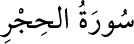

<a name=4044></a><br/>
<b>15- HİCR SÛRESİ</b><br/>
<i><b>Hicr sûresi, 99 âyet olup 87’si Medine’de, diğerleri Mekke’de inmiştir. Hicr, bir yer</b></i><br/>
<i><b>adıdır. 80-84. âyetlerde Hicr’den bahsedildiği için sûreye bu ad verilmiştir.</b></i><br/>
